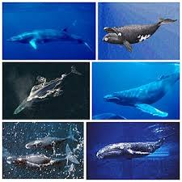

Interessante Fakten und Statistiken
| Fakt/Statistik | Details |
|---|---|
| Über 70% der Erdoberfläche sind von Wasser bedeckt. | Dies unterstreicht die überwältigende Ausdehnung der Ozeane auf unserem Planeten. |
| Der tiefste Punkt im Ozean ist der Marianengraben mit einer Tiefe von etwa 11.034 Metern. | Der Marianengraben ist bekannt für seine extreme Tiefe und seine einzigartige geologische Formation. |
| Das Great Barrier Reef vor der Küste Australiens ist das grösste Korallenriffsystem der Welt. | Das Great Barrier Reef ist ein UNESCO-Weltnaturerbe und ein Hotspot der Biodiversität. |
| Etwa 50-80% des gesamten Lebens auf der Erde befindet sich im Meer. | Die Ozeane sind reich an einer Vielzahl von Lebensformen, von winzigen Plankton bis zu riesigen Walen. |
| Mehr als 80% des Meeresbodens bleiben unerforscht. | Obwohl viel über die Ozeane bekannt ist, gibt es noch viele unentdeckte Gebiete und Geheimnisse in den Tiefen. |
| Die Ozeane produzieren mehr als die Hälfte des Sauerstoffs in der Atmosphäre. | Marine Algen und Phytoplankton spielen eine entscheidende Rolle bei der Sauerstoffproduktion. |
| Überfischung hat dazu geführt, dass etwa 90% der grossen Raubfische weltweit verschwunden sind. | Dies hat schwerwiegende Auswirkungen auf das marine Ökosystem und die Nahrungsketten. |
| Meerestemperaturen steigen aufgrund des Klimawandels, was die Korallenbleiche und den Verlust von Lebensräumen für viele Arten verursacht. | Der Klimawandel bedroht die empfindlichen Ökosysteme der Meere und die Artenvielfalt. |
Google-Karte
Marianengraben
Arktis
Antarktika
7 Weltmeere
nördliche Eismeer
südliche Eismeer
Nordatlantik
Südatlantik
Nordpazifik
Südpazifik
Indische Ozean
Karte
Bild vom Walarten
Hier klicken, um mehr Informationen:
